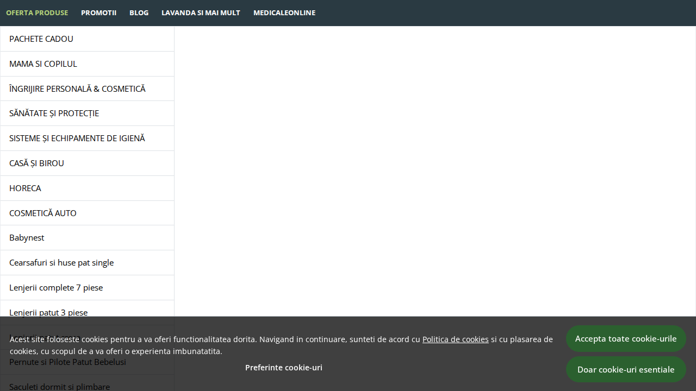
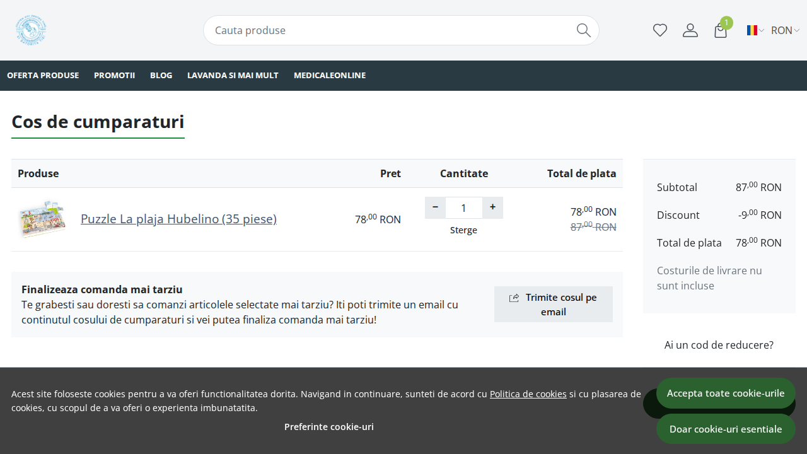

6 teste Playwright rulate pe fluxul public al magazinului: homepage, căutare, coș, cantitate, checkout.
Rulat public, fără comenzi reale — testele se opresc înainte de pasul de platăAm rulat automat, de la zero, 6 teste pe parcursul critic al comenzii: căutarea produsului → adăugarea în coș → modificarea cantității → deschiderea checkout-ului. Toate cele 6 teste trec. Pe parcurs am identificat 2 probleme reale care merită atenția voastră — ambele ușor de ignorat în uz normal, dar cu potențial direct de a bloca comenzi sau de a rupe integrări (analytics, remarketing, automatizări). Costul fixării lor este de câteva minute fiecare; costul ignorării lor apare exact când nu te aștepți.
<button>, dar pe pagina de catalog același element este un <a> (link).<a>); deschideți apoi o pagină de produs individual — același buton e tag <button>.data-attribute comun pe ambele variante.
Aceeași acțiune, două tipuri de elemente diferite — sursa clasică de regresii tăcute.
class="cart-mobile-checkout"), și unul de desktop. Elementul mobil apare însă primul în DOM.cart-mobile-checkout înaintea celui vizibil.
Butonul invizibil de mobil, prins primul de selector — blochează orice automatizare naivă.
| Flux | Ce verifică testul |
|---|---|
| Homepage | Pagina se încarcă, titlul corect |
| Căutare | Căutarea „puzzle" returnează produse cu linkuri funcționale |
| Adăugare în coș | Produsul ajunge efectiv în coș (verificat prin răspunsul serverului + vizibil în coș) |
| Cantitate | Creșterea cantității la 2 dublează corect totalul (78,00 → 156,00 RON) |
| Checkout | Pagina de checkout se deschide fără erori, câmpurile de plată apar |
Toate rulează în ~2 minute, la fiecare deploy — nu la întâmplare, când își amintește cineva. Testele se opresc înainte de pasul de plată; nu se introduc niciodată date reale de card.
Testele sunt scrise în Playwright (standardul actual pentru testare web end-to-end), cu selectori pe rol și text — nu fragili XPath — și retry integrat, pentru rezistență la variațiile normale ale unui site real.
Codul complet, lizibil, e public și îl puteți citi linie cu linie:
github.com/thekyng1/qa-automation-showcase
Acolo găsiți suita de teste, configurația și alte exemple pe e-commerce, SaaS și fintech.
Dacă vreți, extind gratuit suita cu încă 5–10 teste pe fluxurile voastre critice (cont client, filtre de catalog, voucher discount, calcul transport) și vă trimit rezultatul în același format — totul prin email, fără call-uri de vânzări.
Răspundeți direct la acest email cu „da, extinde" și primul raport extins e la voi în maximum 48 de ore.